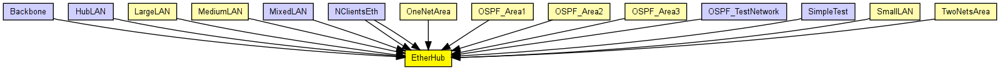
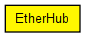

A generic wiring hub model.
ethg[i] gates represent ports. Messages arriving on a port are broadcast to every other port.
The connections should have data rate set to zero. Cable lengths should be reflected in the delays of the connections.
Messages are not interpreted by the hub model in any way, thus the hub model is not specific to Ethernet in any way. Messages may represent anything, from the beginning of a frame transmission to end (or abortion) of transmission.

The following diagram shows usage relationships between types. Unresolved types are missing from the diagram. Click here to see the full picture.
The following diagram shows inheritance relationships for this type. Unresolved types are missing from the diagram. Click here to see the full picture.
If a module type shows up more than once, that means it has been defined in more than one NED file.
| LargeLAN (compound module) |
Several hosts and an Ethernet hub on a switch. One port of the hub connect to a 10Base2 segment. |
| MediumLAN (compound module) |
Several hosts and an Ethernet hub on a switch |
| OneNetArea (compound module) | (no description) |
| OSPF_Area1 (compound module) | (no description) |
| OSPF_Area2 (compound module) | (no description) |
| OSPF_Area3 (compound module) | (no description) |
| SmallLAN (compound module) |
Several hosts on an Ethernet hub |
| TwoNetsArea (compound module) | (no description) |
| Backbone (network) | (no description) |
| HubLAN (network) |
Sample Ethernet LAN: four hosts connected by a hub. |
| MixedLAN (network) |
Sample Ethernet LAN containing eight hosts, a switch and a bus. |
| NClientsEth (network) | (no description) |
| NClientsEth (network) | (no description) |
| OSPF_TestNetwork (network) | (no description) |
| SimpleTest (network) | (no description) |
| Name | Value | Description |
|---|---|---|
| node | ||
| display | i=device/hub |
| Name | Direction | Size | Description |
|---|---|---|---|
| ethg [ ] | inout |
to stations; each one represents a port |
// // A generic wiring hub model. // // ethg[i] gates represent ports. Messages arriving on a port are broadcast // to every other port. // // The connections should have data rate set to zero. Cable lengths // should be reflected in the delays of the connections. // // Messages are not interpreted by the hub model in any way, thus the hub // model is not specific to Ethernet in any way. Messages may // represent anything, from the beginning of a frame transmission to // end (or abortion) of transmission. // simple EtherHub { parameters: @node(); @display("i=device/hub"); gates: inout ethg[] @labels(EtherFrame-conn); // to stations; each one represents a port }